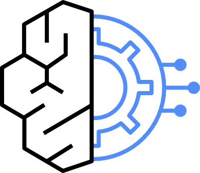

5호 단말전산실, Claude Code
보안영역운영망, 개발망과 분리
→
→
Data Center VPC (서울 리전)

AgentCore Gateway→ Lambda, ECS 컨테이너(MCP Hub)Shared VPC
승인 핵심 조건
① 혁신금융 지정 ② 금보원 '적합' ③ 단말에서 Bedrock 엔드포인트 직접 호출 불가
두 갈래 경로
도구: 단말 → AgentCore Gateway → MCP Hub. 모델: 단말 → LLM Gateway → VPC Endpoint → Bedrock
인터넷 ✕
외부 통신은 전부 차단
출처: KB증권 「망분리를 넘어, AI를 안전하게 확장하다: KB의 AI Ops와 AI Code Assistant 실전 사례」, AWS Financial Services Forum Seoul 2026, MCP Hub 요약 아키텍처
Security OU
Infrastructure OU
Workloads OU
R&D OU
Sandbox, Policy Staging
계정을 눌러 역할과 걸리는 정책을 확인하세요. OU는 같은 SCP를 받는 계정의 묶음이고, 기술 종류가 아니라 규제 경계와 환경으로 나눕니다.
리스크: AI Project 계정이 Bedrock을 직접 호출하면 Gateway를 우회합니다. Project 계정의 bedrock:InvokeModel* 는 Deny, Gateway 역할만 허용합니다.
5호 단말온프렘, Claude Code
사내 방화벽기존 5호망 통제
LLM Gateway(안 A) 전산실
"다음 홉"을 눌러 요청 한 건을 따라가 보세요.
리스크: Gateway 배치는 두 안을 함께 제시합니다. KB증권의 배치는 공개되지 않았고 금보원 해석에 따라 달라지므로 컨설팅 단계에서 확정합니다.